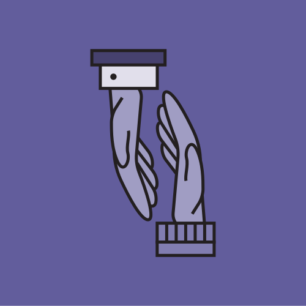
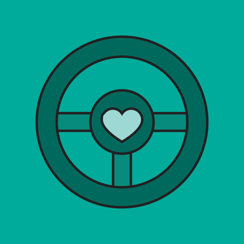
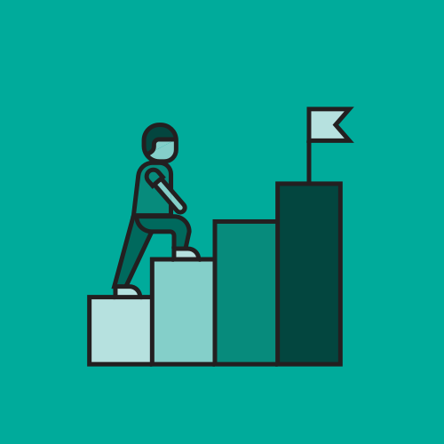
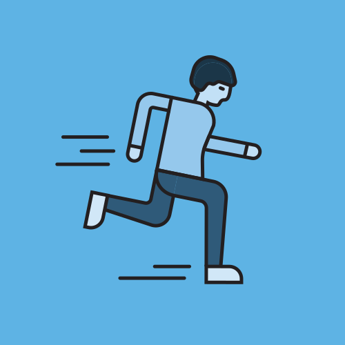
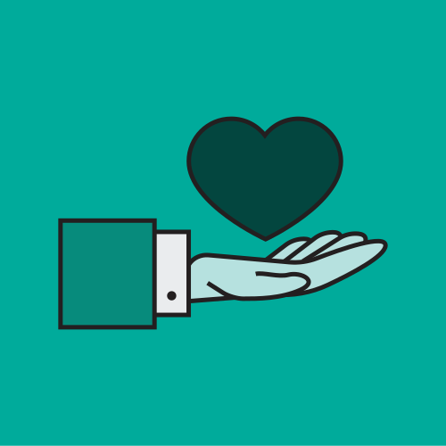

At Streets of Growth, we take pride in our corporate identity, which comprises various visual and verbal elements such as the logo, name, colours, type, and graphics, including web, application, and data visualisation space, providing live component examples, interactive charts and accessibility standards. These elements are essential in conveying a strong, unified message about Streets of Growth's image and values. That's why we have developed guidelines that outline the correct usage of these elements, to ensure that our brand is consistently and effectively presented across all communication channels.
Our commitment to quality, consistency, and style is reflected in these guidelines, which serve as a reference for anyone who uses the Streets of Growth name and marks. We consider our brand assets, including the logo, name, colours, and other identifying elements, to be valuable and deserving of protection. It is the responsibility of everyone in our organisation to prevent any unauthorised or incorrect use of our brand elements and to safeguard the company's interests.
Purple
Blue
Sky
Teal
Green
Charcoal
Red
Orange
Yellow
Off-White
Quick reference: all 10 SOG brand colours
🎨For Designers
Use this guide as your single source of truth for all digital SOG products. Reference the live component examples to match spacing, colour usage, and typographic hierarchy exactly. The colour swatches include Pantone references for cross-medium consistency.
Use SOG tokens (CSS variables) in all Figma variables
Never create one-off colours; extend from the tint, shade, and tone scales
Always verify contrast ratios against the Accessibility section
💻For Developers
All SOG design tokens are available as CSS custom properties on :root. Reference them as var(--sog-purple) in your stylesheets. Never hardcode hex values — always use the token.
Copy the CSS variables block from the Colour section
Import Open Sans from Google Fonts (weights 300/400/500/700)
Use Chart.js 4.4.0 with the SOG_COLORS constant for all charts
Brand Guidelines v1.2: This digital style guide is a companion to the full SOG Brand Guidelines v1.2 PDF. Logo usage rules and colour specifications are documented in the Logo Usage and Colour Palette sections. For print specifications and campaign guidelines, refer to the master brand document.
Brand Identity
Who We Are
Streets of Growth is a dynamic grassroots charity operating in east London, dedicated to transforming young lives through long-term, relationship-based intervention.
Our Organisation
We are a dynamic grassroots charity with a pioneering approach for re-engaging young adults aged 15-25 to reduce harm and transform their lives through developing safer lifestyles, lived environments and maintaining education and career progression.
Our Roots
Established in 2001, Streets of Growth was born out of our own lived experiences of growing up and navigating the streets and council estate realities in east London. We are a multiculturally diverse team of Intervention Coaches and Entrepreneurs, some of whom were once young recipients of these incredible services ourselves.
Our Approach
Our innovative and profoundly dedicated team coach and support young adults over the long term and journey with them until they can maintain progression independently of us. This is who we are and why we have a multi-award-winning reputation and track record for doing it!
🏙️
East London
Grassroots charity
📅
Est. 2001
Over 20 years of impact
🎯
Ages 15-25
Young adults in harm
🏆
Multi-award winning
Proven track record
Brand Identity
Our Vision & Purpose
Two statements that guide everything Streets of Growth does - a bold vision for the world we want to see, and a clear purpose defining exactly how we act on it.
Our Vision
A world without harm or poverty for young people
A world where no young person lives in poverty, is neither harmed or harmer of criminality and violence, and has equal opportunity to education and employment.
On Purpose
Find, accompany and equip
We find, accompany and equip young people aged 15-21 experiencing and engaged in criminal harm, to significantly reduce harm and transform their lifestyle and economic trajectories. Until equipped to do so, independent of us!
Brand Identity
Our Universal Values
Streets of Growth is dedicated to empowering young communities to break cycles of harm and poverty. Guided by our values-led approach, we work to create lasting change and a brighter future for young people, supporting them to thrive in today's society.
1
Professional Purple
Being Professional
Conducting ourselves with honesty, transparency, respect, competence and integrity, when holding each other to account for the skills and behaviours we coach and equip our young people with.
2
Belonging Blue
Belonging
Fostering a safe and inclusive practice and environment where all young people have access to and can engage opportunities and resources to achieve outcomes that ensure equality and sustained progression.
3
Collaborative Sky
Collaborative
Building key strategic partnerships with communities and organisations, sharing knowledge, experience, resources, and being jointly responsible for achieving agreed aims and objectives.
4
Dynamic Teal
Dynamic
Nurturing a flexible and innovative organisational culture that goes beyond our own comfort zones and is agile, adaptable and resilient, especially when responding to young people in harm.
5
Independence Green
Evidence-Led
Being Evidence-Led ensures our practices achieve the desired changes and results. It informs what works and why, how we can improve, and informs best practices, policy, research and systems change.
Foundations
Logo Usage
The SOG logo is the most visible expression of our brand. Consistent application builds recognition and trust. Follow these rules across all digital, print, and environmental applications.
Four approved logo configurations are available. Always use the original artwork — do not recreate from type. Choose the variant most appropriate for the context and background.
Clear Space
Always maintain a minimum clear space zone around the logo equal to the height of the "S" in Streets of Growth (denoted x). No other graphic elements, text, imagery, or page edges should encroach on this zone.
x
x
x
x
Minimum Size
To ensure legibility, never reproduce the logo smaller than the minimums below. Use the monogram variant when space is too constrained for the full lockup.
Full Logo — Digital
68px
/ 24mm print
Minimum width for the full horizontal lockup. Below this size the logotype becomes illegible.
Monogram — Digital
24px
/ 4mm print
Minimum size for the SOG monogram mark. Used for app icons, favicons, and social profile images.
Sizing & Positioning for Print
Consistent logo sizing across paper formats maintains a professional look and feel. The logotype should be prominently displayed on the front of all documentation and publicity materials. Maintain a minimum margin of 12.7 mm from the document edge.
Logo Width by Paper Size
Paper
Width
Height
A3
60mm
Relative to width
A4
50mm
Relative to width
A5
40mm
Relative to width
A6
30mm
Relative to width
Positioning Rules
Top or bottom left — default
On most documents the logo should appear in the top or bottom left position within the margin.
Centre — use with caution
Centre alignment is only appropriate for specific formats such as roll-up banners, background slides, or full-bleed graphics.
12.7 mm from margin
Maintain a minimum distance of 12.7 mm between the logo and any document margin or edge.
Monogram Usage
When space is limited — such as online profiles, social media avatars, app icons, or favicons — use only the SOG monogram rather than the full lockup to ensure a clean, professional appearance and avoid clutter.
Standard Monogram
Colour gradient version. Use on white and light backgrounds. Min size: 24px / 4mm.
Reverse Monogram
All-white version for dark or coloured backgrounds. Min size: 24px / 4mm.
Use monogram for
Social media profile images
App icons & favicons
Online directory profiles
Badge & thumbnail contexts
Embroidery & small merchandise
Approved Colour Backgrounds
The SOG logo may be placed on the following backgrounds. Always verify sufficient contrast between the logo and the background before use.
White / Off-White
Primary (colour mark)
Purpose Black
Reversed (white wordmark)
Brand Gradient
All-white reversed variant
Purple Tint 10%
Light tint surfaces
What to Avoid
Never alter, distort, or misuse the logo in any of the following ways. These rules apply to all applications — digital, print, environmental, and merchandise.
Streets of Growth
Streets of Growth
File Formats: The master logo files are available in SVG (vector, for digital), EPS (vector, for print), and PNG (raster, for web/social). Always request the correct format for your use case from the brand team. Never export or convert logo files yourself without approval.
Foundations
Colour Palette
The SOG colour palette is built around six primary brand colours, each tied to a core brand value, plus four secondary utility colours. Use the CSS custom properties below consistently across all digital touchpoints.
Primary Brand Colours
Each primary colour represents a SOG brand value. Use intentionally; colour choices should reinforce meaning.
Professional Purple
#625D9C
Contrast on white: 4.57:1
RGB
98, 93, 156
CMYK
37 / 40 / 0 / 39
Pantone
2105 C
Belonging Blue
#4197CB
Contrast on white: 2.96:1
RGB
65, 151, 203
CMYK
68 / 26 / 0 / 20
Pantone
7461 C
Collaborative Sky
#5EB3E4
Contrast on white: 2.35:1
RGB
94, 179, 228
CMYK
59 / 21 / 0 / 11
Pantone
292 C
Dynamic Teal
#0095A9
Contrast on white: 3.88:1
RGB
0, 149, 169
CMYK
100 / 12 / 0 / 34
Pantone
7711 C
Independence Green
#00AF9A
Contrast on white: 2.92:1
RGB
0, 175, 154
CMYK
100 / 0 / 12 / 31
Pantone
3265 C
Purpose Black
#323E48
Contrast on white: 10.68:1
RGB
50, 62, 72
CMYK
31 / 14 / 0 / 72
Pantone
432 C
Secondary Colours
Utility colours for status and feedback states only. Never use as primary brand colours in UI.
Warning Red
#F32735
Danger / Error states
RGB
243, 39, 53
CMYK
0 / 84 / 78 / 5
Pantone
186 C
Caution Orange
#FF6C0E
Warning / Elevated risk
RGB
255, 108, 14
CMYK
0 / 58 / 94 / 0
Pantone
165 C
Alert Yellow
#F2CD00
Caution / Low-contrast use only
RGB
242, 205, 0
CMYK
0 / 15 / 100 / 5
Pantone
116 C
Off-White
#F5F5F7
Surface / Background
RGB
245, 245, 247
CMYK
1 / 1 / 0 / 3
Pantone
9144 C
Tint Scales
Each primary colour has four precomputed tints (10%, 20%, 40%, 70%). Use these for backgrounds, hover states, badges, and subtle UI elements. Never mix tints from different colour families in the same component.
Purple
10%
20%
40%
70%
100%
Blue
10%
20%
40%
70%
100%
Sky
10%
20%
40%
70%
100%
Teal
10%
20%
40%
70%
100%
Green
10%
20%
40%
70%
100%
Charcoal
10%
20%
40%
70%
100%
Shade Scales
Shades are created by mixing each colour with black, producing darker variants. Use shades for pressed states, deep backgrounds, high-contrast borders, and text that must appear on coloured backgrounds. Three levels per colour: 15%, 35%, and 55% black added.
Purple
Base
Shade 1
Shade 2
Shade 3
Shade 4
Blue
Base
Shade 1
Shade 2
Shade 3
Shade 4
Sky
Base
Shade 1
Shade 2
Shade 3
Shade 4
Teal
Base
Shade 1
Shade 2
Shade 3
Shade 4
Green
Base
Shade 1
Shade 2
Shade 3
Shade 4
Charcoal
Base
Shade 1
Shade 2
Shade 3
Shade 4
Tone Scales
Tones are created by mixing each colour with mid-grey, producing muted, desaturated variants. Use tones for disabled states, secondary content on coloured surfaces, subtle decorative fills, and anywhere the full saturation would feel too bold. Three levels per colour: 25%, 50%, and 75% grey added.
Purple
Base
Tone 1
Tone 2
Tone 3
Tone 4
Blue
Base
Tone 1
Tone 2
Tone 3
Tone 4
Sky
Base
Tone 1
Tone 2
Tone 3
Tone 4
Teal
Base
Tone 1
Tone 2
Tone 3
Tone 4
Green
Base
Tone 1
Tone 2
Tone 3
Tone 4
Charcoal
Base
Tone 1
Tone 2
Tone 3
Tone 4
Colour Usage Rules
Do
Use 2–3 brand colours maximum per layout
Use Purpose Black (#323E48) for all body text
Use tints for backgrounds and subtle accents
Reserve secondary colours for status/feedback only
Test all colour combinations against WCAG AA
Don't
Don't use all 6 primary colours at once
Don't use brand colours as small body text on white
Migration Note: The existing dashboard was built with a bespoke navy palette (#0D3E55, #1A5C7A, #2E83A8) not connected to the SOG brand. Use the SOG tokens above for all new and future data visualisations. Map legacy navy blues to Dynamic Teal (#0095A9) or Belonging Blue (#4197CB) as appropriate.
Foundations
Gradient Colours
Gradients introduce depth and dynamism. Whether applied to backgrounds, cards, hero areas, or typography, they add an extra layer to visual communication. Use judiciously — limit to one gradient per layout and never combine two gradient elements on the same spread.
Brand Gradients
Five approved gradient pairings derived from the primary brand palette. Each combines two values-led colours for a purposeful feel.
Signature
#625D9C → #0095A9
Professional Purple to Dynamic Teal. Primary brand gradient for hero areas and key CTAs.
linear-gradient(135deg, #625D9C 0%, #0095A9 100%)
Professional
#625D9C → #4197CB
Professional Purple to Belonging Blue. Use for authority and trust communications.
linear-gradient(135deg, #625D9C 0%, #4197CB 100%)
Community
#4197CB → #00AF9A
Belonging Blue to Independence Green. Use for community and inclusion messaging.
linear-gradient(135deg, #4197CB 0%, #00AF9A 100%)
Growth
#0095A9 → #00AF9A
Dynamic Teal to Independence Green. Use for progress, impact, and data contexts.
linear-gradient(135deg, #0095A9 0%, #00AF9A 100%)
Authority
#323E48 → #625D9C
Purpose Charcoal to Professional Purple. Use for dark hero sections and formal reports.
linear-gradient(135deg, #323E48 0%, #625D9C 100%)
Depth Gradients — Base to Shade 4
Each primary colour fading to its darkest shade (Shade 4). These monochromatic gradients work well for dark hero sections, card overlays, and backgrounds that need depth without mixing hues.
The Signature gradient shown at four standard angles. Use 135deg as the default; adjust only when layout requires.
Horizontal
to right
Vertical
to bottom
Diagonal ✓
135deg (default)
Diagonal Alt
45deg
Usage Rules
Do
Use only approved gradient pairings from this guide
Apply to full-bleed hero sections, card headers, or accent bars
Use white or off-white text on any gradient background
Limit to one gradient element per page or spread
Don't
Do not create gradients from secondary (alert) colours
Do not place dark body text directly on a gradient
Do not combine two gradient elements on the same spread
Do not use more than two colour stops in a gradient
Foundations
Typography
All digital SOG products use Open Sans exclusively. The type scale is built on a modular progression from 10px captions to 56px display text, with four weights available: Light (300), Regular (400), Medium (600), and Bold (700).
Weight Specimens
Open Sans Light — 300 — The quick brown fox jumps over the lazy dog
Open Sans Regular — 400 — The quick brown fox jumps over the lazy dog
Open Sans Medium — 600 — The quick brown fox jumps over the lazy dog
Open Sans Bold — 700 — The quick brown fox jumps over the lazy dog
Type Scale
Display XL56px / 700 / -0.5px
Heading
Display LG48px / 700 / -0.3px
Heading
Display MD40px / 700 / -0.2px
Heading
Display SM32px / 700 / -0.1px
Section Heading
Headline LG24px / 700 / 0px
Card Title or Modal Heading
Headline MD20px / 600 / 0px
Subsection title or table heading group
Headline SM18px / 600 / 0px
Widget header or sidebar section label
Body LG16px / 400 / 0px
Primary body copy. Used in descriptions, long-form content, and modal bodies.
Body MD14px / 400 / 0px
Standard UI text. Used in form labels, table cells, cards, and navigation items.
Body SM12px / 400 / 0px
Helper text, metadata, secondary information below inputs.
Caption10px / 700 / +0.08em
TABLE HEADER / LABEL / CHIP TEXT
Type Pairings
SECTION LABEL
Programme Overview
Track the progress of all active participants across their programme journey, from initial referral through to Phase 3 completion and follow-up.
Card or Widget Heading
Supporting description text that provides context to the heading above. Keep to 1–2 lines.
METRIC LABEL
142
Active participants this quarter ↑ 12% vs last quarter
Leading & Tracking
Style
Size
Line Height
Letter Spacing
Display XL
56px
1.1 (62px)
−0.5px
Display LG
48px
1.1 (53px)
−0.3px
Display MD
40px
1.15 (46px)
−0.2px
Display SM
32px
1.2 (38px)
−0.1px
Headline LG
24px
1.3 (31px)
0px
Headline MD
20px
1.3 (26px)
0px
Body LG
16px
1.6 (26px)
0px
Body MD
14px
1.6 (22px)
0px
Caption / Label
10–11px
1.4
+0.06em–0.1em
Do
Use only Open Sans for all digital UI
Use weights 300, 400, 600, 700 only
Use tight tracking (negative) for large display text
All spacing is derived from a 4px base grid. Use multiples of 4px for all padding, margin, and gap values. The layout system uses a 12-column grid with a maximum content width of 1280px and 24px gutters.
Spacing Scale (4px base)
4px — xs
space-1
8px — sm
space-2
12px
space-3
16px — md
space-4
20px
space-5
24px — lg
space-6
32px — xl
space-8
40px
space-10
48px — 2xl
space-12
64px — 3xl
space-16
Border Radius Scale
sm — 4px
md — 8px
lg — 12px
xl — 16px
full — pill
Grid System
12-column grid: Maximum content width of 1280px, centred with auto margins. Column gutter: 24px. Page-level section padding: 64px horizontal, 64–80px vertical. On mobile (below 768px), reduce to single column with 24px horizontal padding.
12-column grid preview
Full width (12 col)
6 col
6 col
4 col
4 col
4 col
3
3
3
3
Foundations
Iconography
SOG uses the Google Material Icons library — a consistent, open-source icon system with 2,500+ icons available in five styles. Icons reinforce meaning and improve scannability; they should never be used as decoration alone.
Icon Library
Material Icons are loaded via Google Fonts CDN. Two styles are approved for use in SOG products.
person
Outlined
Lighter weight. Use for secondary actions and inactive states.
material-icons-outlined
person
Rounded
Softer edges. Use for friendly, conversational contexts.
Core icons used across SOG digital products, grouped by category. All icons shown in Outlined style at 28px.
People & Participants
personperson
groupgroup
person_addperson_add
account_circleaccount_circle
badgebadge
supervisor_accountsupervisor_account
Programme & Sessions
eventevent
event_availableevent_available
assignmentassignment
assignment_turned_inassignment_turned_in
track_changestrack_changes
checklistchecklist
Data & Reporting
bar_chartbar_chart
trending_uptrending_up
analyticsanalytics
descriptiondescription
insightsinsights
summarizesummarize
Safety & Wellbeing
verified_userverified_user
health_and_safetyhealth_and_safety
favoritefavorite
emoji_eventsemoji_events
supportsupport
psychologypsychology
Navigation & UI Actions
dashboarddashboard
searchsearch
editedit
deletedelete
addadd
filter_listfilter_list
downloaddownload
notificationsnotifications
settingssettings
more_vertmore_vert
closeclose
chevron_rightchevron_right
Icon Use Cases
Examples of how icons are used in context across SOG UI components.
Button Actions
Navigation Items
dashboardDashboard
groupParticipants
event_availableSessions
analyticsReports
Status & Feedback
check_circleSession completed successfully
warningRisk score increased — review required
dangerousUnable to save changes
infoNew assessment tool available
Feature Cards (Outlined)
psychology
Wellbeing Assessment
Track participant wellbeing over time
insights
Progress Insights
Visual analytics on programme outcomes
Icon Specifications
Property
Value
Library
Google Material Icons (Apache 2.0)
Loading method
Google Fonts CDN (icon font)
Approved styles
Outlined, Rounded
Recommended sizes
18px (inline), 24px (default), 36px (feature), 48px (empty state)
Minimum size
18px
Colour
Inherit from brand palette; never use standalone grey on white below 3:1 contrast
Touch target
44×44px minimum (pad with CSS if icon is smaller)
Accessibility
Add aria-label or aria-hidden="true" + visible text label
Brand Assets
Icon Illustrations
SOG's icon illustrations are custom-designed visual assets — distinct from UI icons. They are used as images in presentations, PowerPoint decks, websites, infographics, and printed communications. Each illustration is stylised in SOG brand colours and designed to be instantly recognisable as an extension of our brand identity.
When designing or reproducing these illustrations, use the following settings to ensure consistency across all brand applications.
Property
Value
Canvas Size
500 × 500 px
Clear Space
68 px
Stroke Width
5 px
Colours
3–6 tones including white
Minimum Display Size
50 px
Outer Radius
14 px
Inner Radius
Half the selected outer radius
Recommended Sizes
50px
Minimum
100px
Standard
200px
Feature
Do Not
Recolour or alter the illustration
Stretch, crop, or rotate the artwork
Remove or change the background
Use below the 50px minimum size
Use as a substitute for UI icons
Sample Icons
A selection from the full library of 127 custom illustrations. The complete set is available via the SOG Brand Resource Centre.
Education

Handshake
Target

Empathy
Leadership
Safe Place
Family
Brain

Careers
Social Action
Strategy
Graduation Party
Impact

Running

Values
Components
Buttons
Buttons trigger actions. Use the primary button for the single most important action on a page. Limit destructive buttons to genuinely irreversible actions.
Form inputs use a consistent 38px height, 8px border radius, and a 3px purple focus ring. Error states use Warning Red with matching focus ring.
Text Input States
Please enter a valid email address
This field cannot be edited
Textarea
Maximum 2,000 characters
Select & Search
Checkbox & Radio
Multi-step Form Indicator
✓
Basic Info
2
Programme Details
3
Review & Submit
Step 2: Programme Details
Components
Cards
Cards group related content and actions. KPI cards use coloured top borders to signal their data category. All cards use 12px border radius and 1px #E2E4E6 border.
KPI Cards
Active Participants
142
Across all phases ↑ 12%
Phase Completions
38
This quarter ↑ 8%
Tools Deployed
416
Last 30 days ↑ 5%
Avg Risk Score
54
Programme mean ↓ 6%
High Risk Cases
7
Require review ↓ 2
Base Card
Participant Profile
Jordan Smith
ID: YP-2024-0142 · Enrolled 14 Jan 2024
Phase 2Active
Goals Completed
Updated 2 hours ago
6 / 9
Gradient Card
Programme Milestone Reached
Jordan Smith has successfully completed Phase 2 of the Streets of Growth programme. Outstanding work from both participant and key worker.
Empty State Card
No participants found
Try adjusting your search filters or add a new participant to get started.
Components
Badges
Badges surface short, categorical metadata: status, phase, brand value. They must never be used for body text.
Consistent navigation patterns help users orient themselves within the SOG application. Use the sidebar pattern for main navigation, tab pills for in-page switching, and breadcrumbs for deep hierarchies.
App Sidebar
Programme
dashboardDashboard
groupParticipants
assignment_turned_inSessions
trending_upReports
Settings
Content area →
Tab Bar (Pill Style)
Overview
Sessions
Assessments
Documents
Showing: Overview
Breadcrumb
Pagination
Components
Data Tables
Tables display structured data with consistent row padding, muted header backgrounds, and subtle hover states. Always include a search filter on tables with more than 10 rows.
Standard Table with Search
Participants — Phase 2
Participant
Phase
Status
Key Worker
Last Session
Risk Score
JS
Jordan Smith
YP-2024-0142
Phase 2
Active
Sarah Mitchell
12 Mar 2024
58
AK
Amara Kofi
YP-2024-0138
Phase 1
Active
Tom Waverly
11 Mar 2024
24
MO
Marcus Obi
YP-2024-0129
Phase 3
At Risk
Sarah Mitchell
8 Mar 2024
82
LR
Lena Rodrigues
YP-2024-0115
Follow-up
Closed
Tom Waverly
2 Feb 2024
18
DT
Dani Torres
YP-2024-0151
Phase 1
High Risk
James Cole
13 Mar 2024
91
Showing 5 of 142 participants
Empty Table State
Participant
Phase
Status
Key Worker
No records found
Try adjusting your search or filter criteria
Components
Progress & Loading
Use progress indicators to communicate system state. Never block the UI without a loading indicator; always show users that work is in progress.
Progress Bars
Phase 1 Milestones25%
Phase 2 Milestones60%
Phase 3 Milestones90%
Skeleton Loader
Spinners & Loading Buttons
Components
Avatars & Identity
Avatars represent users and entities throughout the application. Use initials when no photo is available. Status dots indicate availability or record status.
Initials Avatars
JD
SM — 32px
SM
MD — 40px
AK
LG — 64px
TW
Blue variant
MO
Teal variant
LR
Green variant
Avatar with Status Dot
JS
AK
MO
Marcus Obi
Active in programme
App Logo Mark
32px
48px
64px
Gradient
Data Visualisation
Data Visualisation
All SOG charts use the brand colour palette via the SOG_COLORS constant and Chart.js 4.4.0 with global Open Sans font defaults.
Migration Note: The legacy dashboard used a bespoke navy palette (#0D3E55 → Dynamic Teal, #1A5C7A → Belonging Blue, #2E83A8 → Collaborative Sky). Migrate chart colours to SOG tokens for all new and updated visualisations.
Data Visualisation
Programme Timeline — Bubble Chart
Use the bubble chart to visualise activity volume across time and intervention type. Bubble radius encodes event count or intensity. Each Y-axis category maps to a programme session type.
Configuration notes: Y-axis uses categorical positioning (0–3 mapped to session types). Bubble radius (r) ranges from 4 to 18 and represents session frequency. Colour encodes programme phase: Purple = Phase 1, Blue = Phase 2, Teal = Phase 3, Green = Follow-up.
Data Visualisation
Risk Score Over Time — Mixed Chart
A mixed bar + line chart showing mean group risk score each month. Bar colour adapts to the risk zone (green/yellow/orange/red). A purple dashed trend line overlays the bars.
Mean Group Risk Score — Monthly
Bars = monthly mean. Colour coded by risk band. Dashed line = 3-month rolling trend.
0–30 Low risk
31–55 Medium risk
56–75 Elevated risk
76–100 High risk
Data Visualisation
Tool Frequency — Horizontal Bar Chart
A horizontal bar chart sorted descending by usage count. Shows relative frequency of each intervention tool deployed across the programme. Belonging Blue bars on a white background.
Intervention Tool Usage — Programme Total
Total deployments per tool type. Sorted descending by frequency.
Data Visualisation
Monthly Tool Usage — Stacked / Grouped Bar
Toggle between grouped and stacked views to compare monthly tool usage across 5 session categories. Grouped mode reveals individual category trends; stacked mode shows total volume.
Monthly Tool Usage by Category
5 session types across 12 months. Toggle view below.
Data Visualisation
Programme Effectiveness — Multi-line Chart
A 5-series line chart with filled areas showing programme outcome measures over 24 months. The left Y-axis tracks composite/efficacy scores (higher = better); the right Y-axis tracks risk score (lower = better).
Programme Outcome Measures — 24 Months
Filled line chart. Left axis: composite, safety, self-efficacy (higher = better). Right axis: risk score (lower = better).
Data Visualisation
Engagement Heatmap
Shows engagement intensity per participant per month. Rendered as a pure HTML/CSS table using a 5-tier teal intensity scale. Allows quick identification of disengagement patterns across the cohort.
Participant Engagement — Jan to Dec 2024
Colour intensity represents engagement level (0 = none, 4 = high). Built as an HTML/CSS table; no charting library required.
LowHigh
Data Visualisation
Phase Readiness Scorecard
Tracks milestone completion across programme phases. Each card shows phase readiness as a percentage with a progress bar and individual milestone checklist. Built in pure HTML/CSS.
Radial charts work well for showing proportions, goal completion, and comparative rankings. Three approved patterns: Doughnut (part-to-whole), Polar Area (comparative magnitude), and Radar (multi-dimension scoring). All use SOG brand colours.
Doughnut Chart — Programme Referral Breakdown
Use doughnut charts to show part-to-whole composition. Keep to 5 segments or fewer for legibility.
Referral Sources
Distribution of young person referrals by source. Hover segments for detail.
Polar Area Chart — Tool Category Usage
Polar area charts compare magnitudes across categories using segment radius rather than arc angle. Good for showing relative scale at a glance.
Radar charts display multi-dimensional scoring on a single chart. Use when comparing a subject across 5-8 dimensions. Limit to 2 datasets for readability.
Outcome Dimension Scores — Intake vs Exit
Comparison of young person outcome scores at intake and programme exit across six dimensions.
More than 3 datasets; audience unfamiliar with chart type
8 axes, 2 datasets
Data Visualisation
KPI Stat Cards & Sparklines
Headline metrics with inline trend sparklines. Use at the top of any dashboard to give an immediate performance snapshot. Each card shows a single number, trend direction, percentage change, and a 12-point sparkline.
Programme Dashboard — Key Metrics
Four core KPIs with trend sparklines. Green upward arrow = positive, red downward = negative.
Usage Rules
Do
Limit to 4-6 KPI cards per dashboard row
Use the colour to reinforce meaning (red for risk, green for positive outcomes)
Always show the comparison period label (vs last quarter, vs target)
Use sparklines to show trend direction, not precise values
Don't
Don't use more than two accent colours in a single KPI row
Don't truncate values without a tooltip explaining the full number
Don't display KPI cards without a comparison reference
Don't use sparklines as a substitute for a detailed trend chart
Data Visualisation
Funnel Chart
Shows drop-off through sequential programme stages. Essential for pipeline reporting — referral to independent progression. Built in pure HTML/CSS for maximum flexibility.
Young Person Programme Journey
Number of young people at each stage of the programme pipeline. Hover for conversion rate from previous stage.
When to Use a Funnel
Use funnel charts when you have a defined sequence of stages where participants can drop out. The width of each bar is proportional to the count, making volume and conversion immediately visible. Avoid funnels for non-sequential data or when stages can be skipped.
Data Visualisation
Gauge Chart
Displays a single metric against a scale or target. Use for capacity indicators, goal completion, and performance thresholds where a single number needs immediate context.
Programme Capacity & Performance Gauges
Three independent gauges. The coloured arc shows current value; grey arc shows remaining capacity or headroom.
Colour Thresholds
0-33% — use Independence Green
34-66% — use Dynamic Teal
67-89% — use Professional Purple
90-100% — use Warning Red (at or over capacity)
Data Visualisation
Diverging Bar Chart
Horizontal bars extending left (negative/decline) and right (positive/improvement) from a shared zero baseline. Ideal for before/after comparisons, net change, and showing where progress has and hasn't been made.
Outcome Score — Net Change (Intake to Exit)
Change in outcome domain scores from programme intake to exit. Purple = improvement, Red = decline.
When to Use a Diverging Bar
Diverging bars work best when values can be meaningfully positive or negative relative to a baseline. Use for net change, improvement vs decline, surplus vs deficit, or agreement vs disagreement scales. Always label the zero line clearly and annotate any bars that cross it.
Data Visualisation
Waterfall Chart
Shows cumulative additions and subtractions over time. Essential for tracking cohort flow — young people entering and leaving the programme each month with a running active total.
Monthly Cohort Flow — Active Participants
Green bars = joiners. Red bars = exits. Purple line = running active cohort total.
When to Use a Waterfall
Use waterfall charts when you need to show how individual additions and subtractions contribute to a running total. Ideal for programme cohort tracking, budget variance, or any metric that changes incrementally over sequential periods. Always show the net direction clearly — use green for gains and red for losses.
Data Visualisation
Scatter Plot
Plots correlation between two continuous variables. Use to explore whether engagement (sessions attended) is associated with outcome score improvement across participants.
Sessions Attended vs. Outcome Score Improvement
Each dot represents one participant. A positive correlation suggests higher attendance is associated with greater improvement.
When to Use a Scatter Plot
Use scatter plots to explore whether two variables are correlated — not to prove causation. They are especially useful in reporting to funders who want evidence of dosage-effect relationships. Add a trend line when the pattern is unclear or the audience is non-technical.
Data Visualisation
Area Chart
A filled line chart for cumulative or volume trends over time. Ideal for showing growth in total young people reached and actively engaged year-on-year.
Young People Reached — Cumulative Growth (2015–2024)
Total young people ever reached (teal) vs. actively engaged in the programme (green) across each year.
When to Use an Area Chart
Use area charts when the filled region between lines carries meaning — cumulative totals, volume trends, or comparing two related metrics over time. Avoid using more than two or three filled areas as they quickly become difficult to read. Use semi-transparent fills so overlapping areas remain visible.
Data Visualisation
Calendar Heatmap
GitHub-style daily activity grid showing session or engagement volume across a full year. Each cell is one day; colour intensity reflects activity level.
Daily Session Activity — 2024
Each cell represents one day. Darker purple = higher number of sessions delivered that day.
When to Use a Calendar Heatmap
Calendar heatmaps are best for identifying patterns in daily activity over a full year — busy seasons, gaps in service delivery, or days-of-week trends. They are especially compelling for operational reporting and annual reviews. Keep the colour scale simple: one hue with 4–5 intensity levels is easiest to read.
Data Visualisation
Treemap
Proportional rectangles for hierarchical or part-to-whole breakdowns. Ideal for showing how intervention types, funding streams, or service categories compare by volume.
Intervention Category Breakdown — by Participant Volume
Rectangle size is proportional to the number of participants engaged in each intervention category.
When to Use a Treemap
Use treemaps when you want to show proportional part-to-whole relationships across many categories simultaneously. They work best when categories differ significantly in size — if all values are similar, a bar chart is clearer. Avoid using more than 8–10 categories or the smallest rectangles become unreadable.
Data Visualisation
Bullet Chart
Ultra-compact single-metric display showing actual value, target, and performance range. Perfect for dense reporting tables where space is limited and multiple KPIs need to be compared at a glance.
Bullet charts replace gauges and thermometer charts in dense reporting contexts. They communicate actual performance, a target marker, and qualitative ranges (poor / satisfactory / good) in a single compact row. Use them in reporting tables where you need many metrics visible simultaneously without the visual bulk of full gauge charts.
Patterns
Layout Patterns
These composable layout patterns form the foundation of all SOG application screens. Use the app shell for all main views, and the dashboard grid for data-heavy overview pages.
App Shell
Sticky 260px left sidebar + fixed top nav + scrollable main content area.
SIDEBAR 260px
Top Navigation Bar — 56px fixed
MAIN CONTENT — scrollable
Dashboard Grid
4-column KPI row at top, then 2-column chart grid below. On mobile, stacks to single column.
PARTICIPANTS
142
COMPLETIONS
38
TOOLS USED
416
HIGH RISK
7
CHART AREA (6 col)
CHART AREA (6 col)
Status Flow Diagrams
Referral and task status flows used throughout the application.
Referral Status
Referred
→
Assessed
→
Enrolled
→
Active
→
Closed
→
On Hold
↕
At Risk
Task Status
Not Started
→
In Progress
→
Complete
SOG Gradient Usage
Programme Dashboard
Use the SOG gradient for hero banners, milestone celebration cards, and section headers. Never use as a background for body text.
Gradient progress bar
Standards
Accessibility
All SOG digital products must meet WCAG 2.1 Level AA. This section covers focus management, contrast compliance, and key ARIA patterns. Use Purpose Black for all body text; brand colours are for accents only.
Focus Ring Specification
Focus rings must be visible and consistent. The SOG focus ring is 2px solid #625D9C with 2px offset. Tab through the demo below.
/* SOG Focus Ring — apply to all interactive elements */
:focus-visible {
outline: 2px solid #625D9C;
outline-offset: 2px;
}
/* Remove default outline only when :focus-visible is supported */
:focus:not(:focus-visible) {
outline: none;
}
Colour Contrast Audit
Colour
Hex
On White
Ratio
WCAG AA Small
WCAG AAA
AA-Compliant Shade
Purpose Black
#323E48
Sample text
10.68:1
✓ Pass
✓ Pass
—
Professional Purple
#625D9C
Sample text
4.57:1
✓ Pass
✗ Fail
#403C659.18:1 ✓
Dynamic Teal
#0095A9
Sample text
3.88:1
⚠ Large text only
✗ Fail
#00616E6.61:1 ✓
Independence Green
#00AF9A
Sample text
2.92:1
✗ Fail
✗ Fail
#0072645.16:1 ✓
Belonging Blue
#4197CB
Sample text
2.96:1
✗ Fail
✗ Fail
#2A62846.18:1 ✓
Collaborative Sky
#5EB3E4
Sample text
2.35:1
✗ Fail
✗ Fail
#2A51677.83:1 ✓
Warning Red
#F32735
Sample text
4.01:1
⚠ Borderline
✗ Fail
#CE212D5.28:1 ✓
Caution Orange
#FF6C0E
Sample text
2.92:1
✗ Fail
✗ Fail
#A646095.31:1 ✓
Alert Yellow
#F2CD00
Sample text
1.71:1
✗ Fail
✗ Fail
#6D5C006.08:1 ✓
warning
Key Guidance
Always use Purpose Black (#323E48) for all body text. Brand colours should only appear as accents, badges, borders, and icons; never as small body text on white backgrounds. Alert Yellow (#F2CD00) must only be used on dark backgrounds.
ARIA Patterns
HTML
<!-- Live region for dynamic alerts -->
<div role="alert" aria-live="assertive">
Your changes have been saved.
</div>
<!-- Icon-only button -->
<button aria-label="Close panel" class="btn btn-icon">
<svg ...></svg>
</button>
<!-- Active nav item -->
<a href="/dashboard" aria-current="page" class="nav-item active">
Dashboard
</a>
<!-- Required field -->
<input
type="text"
aria-required="true"
aria-describedby="name-error"
class="sg-input error"
>
<div id="name-error" class="sg-error-msg" role="alert">
This field is required.
</div>
<!-- Expanded disclosure -->
<button aria-expanded="false" aria-controls="panel-1">
Show details
</button>
<div id="panel-1" hidden>...</div>
Skip Navigation
A skip navigation link is included at the top of this page. It appears visually when focused via keyboard (Tab key). This allows keyboard and screen reader users to jump directly to the main content area.
HTML + CSS
<!-- Place immediately after <body> -->
<a href="#main-content" id="skip-link">Skip to main content</a>
<style>
#skip-link {
position: absolute;
top: -100%;
left: 16px;
background: var(--sog-purple);
color: white;
padding: 8px 16px;
border-radius: 6px;
font-size: 14px;
font-weight: 600;
text-decoration: none;
z-index: 999;
transition: top 0.15s;
}
#skip-link:focus { top: 16px; }
</style>